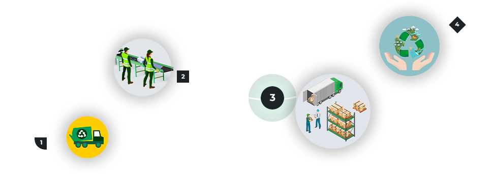

Qual o objetivo do TechCycle?
O lixo eletrônico é um dos tipos de resíduos que mais cresce no mundo. Equipamentos como celulares, computadores, televisores e eletrodomésticos chegam ao fim de sua vida útil, mas raramente são descartados de maneira adequada. Em vez disso, muitos desses produtos acabam em aterros, contaminando o solo e a água com substâncias tóxicas, como chumbo, mercúrio e cádmio. A reciclagem do lixo eletrônico é essencial para evitar esses danos e promover a reutilização de materiais valiosos, como metais e plásticos, que podem ser transformados em novos produtos. Além disso, ao descartar corretamente os aparelhos, contribuímos para a redução da extração de recursos naturais, diminuindo os impactos ambientais. Ao optar pela reciclagem de eletrônicos, você não apenas ajuda a proteger o meio ambiente, mas também incentiva uma economia mais sustentável. Procure pontos de coleta e dê o destino adequado para os seus dispositivos antigos. O planeta agradece!
Como é feita a coleta?

- COLETA - Você pode entrar em contato conosco através do site e de nossos canais de comunicação para agendar a coleta, ou pode ir em um de nossos pontos de coleta.
- TRIAGEM - Após coletarmos os produtos, separamos os equipamentos de acordo com seu estado de conservação
- DESTINO - A depender do estado de conservação dos equipamentos, serão consertados e enviados para reuso, ou seguem para reciclagem.
- RECICLAGEM - Caso o equipamento não tenha condições de conserto e reuso, será reciclado, evitando um maior número de lixo gerado
Quais são os benefícios da reciclagem?
A reciclagem de lixo eletrônico desempenha um papel crucial na construção de uma economia circular, modelo que visa reduzir o desperdício e maximizar o uso de recursos. Em vez de descartar equipamentos eletrônicos, que contêm materiais valiosos como metais preciosos e plásticos, a reciclagem permite que esses materiais sejam recuperados e reutilizados em novos produtos. Isso diminui a necessidade de extração de novos recursos naturais, reduzindo a pressão sobre o meio ambiente e as comunidades envolvidas na mineração. Além disso, o processo de reciclagem contribui para a redução da poluição e do consumo de energia, uma vez que a reutilização de materiais exige menos recurso do que a produção de novos. Ao adotar a reciclagem de eletrônicos, estamos não apenas ajudando a preservar o meio ambiente, mas também fortalecendo um modelo de desenvolvimento mais sustentável e responsável.
Algumas dicas para te ajudar no dia a dia!
Reduzir a geração de lixo eletrônico é uma maneira eficaz de minimizar os impactos ambientais e economizar recursos. Uma das principais ações é prolongar a vida útil dos dispositivos, realizando manutenções periódicas, atualizações de software e reparos simples sempre que possível. Optar por produtos duráveis e de qualidade, que tenham maior tempo de vida útil, também faz uma grande diferença. Além disso, é importante repensar o consumo, evitando a compra impulsiva de novos aparelhos quando os antigos ainda funcionam bem. Ao adotar hábitos como esses, você não só contribui para a redução do lixo eletrônico, mas também ajuda a diminuir a demanda por novos produtos, diminuindo a extração de recursos naturais e o impacto ambiental associado. Pequenas atitudes no dia a dia podem fazer uma grande diferença para o futuro do nosso planeta.